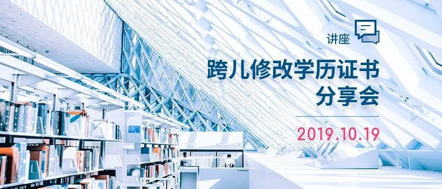
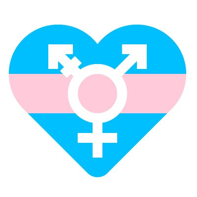

10.19 | 跨儿修改学历证书分享会
以下文章来源于跨儿心理 ，作者跨儿心理

跨儿心理
.
跨儿心理小组，是一个专注于跨儿（跨性别者与非性别常规者）心理健康的公益团队。小组致力于通过社群服务、社群培力、调查研究、公众教育与社会倡导等工作，改善跨儿的福祉，促进社会的性别多元平等。
转载忘了加[转]…抱歉QAQ10.19 ▍讲座
跨儿修改学历证书分享会
The Sharing session


19 October 2019
一些跨儿在找工作时要么拿出与本人现有性别不符的学历证书并直接和公司老板出柜；要么通过种种方法如伪造、拖延等，向公司老板隐瞒自己的学历信息。而一经公司发现，跨性别员工往往可能会被解雇、降职、处分、列入黑名单等等。
如何才能突破困境？如何才能成功修改学历证书？如何才能不出柜也找到心仪的工作？
欢迎参加本次跨儿心理小组与彩虹律师团联合举办的分享会，在这里有你想了解的关于修改学历证书的答案。
分享会介绍


彩虹律师团
一个友善的专业律师团队
分享嘉宾
彩虹律师团法务助理


-END-
文案|四爺
美工|可可
排版|健健